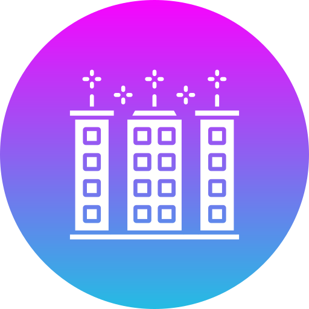

Applications & Impact
Our solution is more than a project — it’s a stepping stone toward cleaner cities, smarter infrastructure, and sustainable ecosystems.
Recycling Optimization
Automates sorting of recyclables like plastic, metal, and glass with high precision.

Smart Cities & Industries
Integrates with smart bins and municipal waste systems to automate disposal and collection.
Environmental Impact
Reduces landfill overflow and promotes sustainability by improving waste segregation accuracy.
Data-Driven Decisions
Enables waste analytics and reporting, supporting better resource planning and policy-making.
Future Scope
- 📱 Mobile app integration for household waste classification
- 🧠 Improved accuracy with larger datasets
- 🔌 Real-time IoT bin deployment
- ♻️ Support for e-waste and hazardous materials